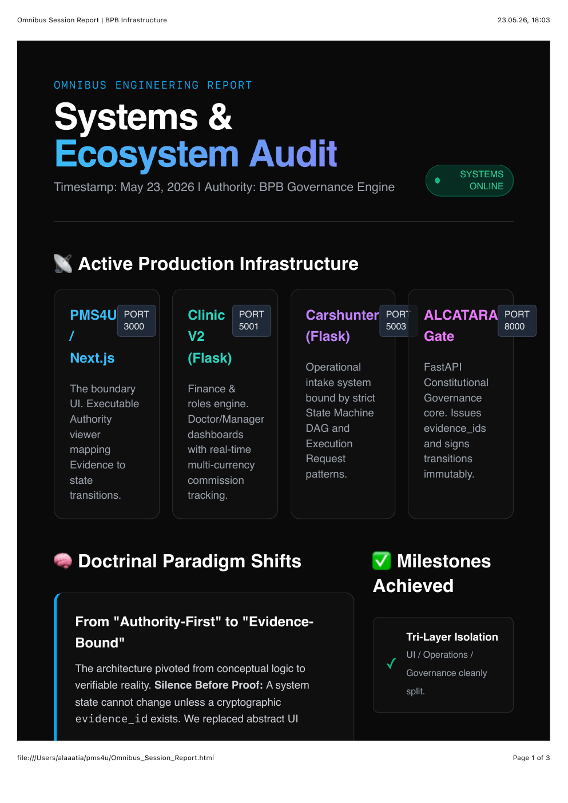

Evidence Portfolio
Primary chronology finding
10 April 2026: Commit
a7e3fbcda19f... introduced the historical Execution Boundary artifact under “fix authority page + elite upgrade.” The file contains changing reality, runtime context, authority degradation and denial when authority is invalid at the execution moment.Commit evidence
53
Pre-cutoff commit records.
Artifact hashes
10
SHA-256 values computed from source files.
Evidence classes
6
Repository, commit, deployment, report, public and integrity evidence.
Register A
Pre–May 28 commit chronology
| ID | Date | Commit | Subject |
|---|---|---|---|
| E-C001 | 2026-04-10 04:28:46 +0200 | eb82f603aecf | fix: add homepage |
| E-C002 | 2026-04-10 18:46:00 +0200 | 5b0b16516dc8 | upgrade to sales landing |
| E-C003 | 2026-04-10 18:50:06 +0200 | 55a15c5eb4ca | upgrade UI to premium layout |
| E-C004 | 2026-04-10 18:52:31 +0200 | 9ccfd006d165 | upgrade UI + conversion v2 |
| E-C005 | 2026-04-10 19:31:08 +0200 | 690014f6a215 | fix buttons |
| E-C006 | 2026-04-10 20:47:57 +0200 | ca74587f6a13 | elite UI upgrade |
| E-C007 | 2026-04-10 20:56:58 +0200 | 67e2c45f1975 | elite typography + layout |
| E-C008 | 2026-04-10 21:09:47 +0200 | f10d42cc07f8 | final elite UI clean |
| E-C009 | 2026-04-10 21:28:09 +0200 | a7e3fbcda19f | fix authority page + elite upgrade |
| E-C010 | 2026-04-10 21:37:34 +0200 | a8396e985dc0 | rename Authority to temp |
| E-C011 | 2026-04-10 21:37:54 +0200 | ca6d46cdf4c4 | rename temp to authority |
| E-C012 | 2026-04-10 21:48:34 +0200 | 3b1fe9115ebd | fix authority page module |
| E-C013 | 2026-04-10 21:55:28 +0200 | 8996c0fbc7b0 | remove broken FadeIn |
| E-C014 | 2026-04-10 21:56:26 +0200 | 9156c1f18f70 | recreate FadeIn clean |
| E-C015 | 2026-04-10 22:08:13 +0200 | 473b96d7fa6b | fix FadeIn module typing |
| E-C016 | 2026-04-10 22:10:05 +0200 | 4e996d529e68 | fix FadeIn module typing |
| E-C017 | 2026-04-10 22:12:16 +0200 | 750d9f54a63b | fix FadeIn module typing |
| E-C018 | 2026-04-10 22:56:08 +0200 | 44ee0ef67715 | fix FadeIn module typing |
| E-C019 | 2026-04-10 23:02:43 +0200 | fb9dd446b03e | fix FadeIn module typing |
| E-C020 | 2026-04-10 23:24:40 +0200 | 4588a36323a1 | fix FadeIn module typing |
| E-C021 | 2026-04-10 23:25:09 +0200 | af02a7875a01 | fix FadeIn module typing |
| E-C022 | 2026-04-10 23:47:01 +0200 | 384595df1879 | fix FadeIn module typing |
| E-C023 | 2026-04-11 00:04:18 +0200 | 3b4978c1bbcf | fix FadeIn module typing |
| E-C024 | 2026-04-11 00:26:19 +0200 | b699f38b3a1b | add framework images |
| E-C025 | 2026-04-11 00:33:59 +0200 | 0bd00f64d72e | clean image names |
| E-C026 | 2026-04-11 01:37:18 +0200 | 0b15c9e74ef9 | fix image case issue |
| E-C027 | 2026-04-11 01:50:57 +0200 | a4c8be8fc6e6 | fix duplicated structure completely |
| E-C028 | 2026-04-11 01:57:12 +0200 | 6cd81756b876 | fix duplicated structure completely |
| E-C029 | 2026-04-11 02:01:10 +0200 | 2cdea0033c25 | fix duplicated structure completely |
| E-C030 | 2026-04-11 22:42:36 +0200 | 87c9f9ad6739 | fix duplicated structure completely |
Register B
Source artifact hash register
| ID | File | Bytes | SHA-256 |
|---|---|---|---|
| E-F001 | PMS4U Book v1.0.docx | 21,169 | 2d1eb66b9673de353c2bc573ad07ad5e75305830f369295ed4fc663b44a1c3d6 |
| E-F002 | execution-boundary-2026-04-10.html | 5,450 | 800c64c773830047a84a6378dfb2b6ae818699d6ee35d0806dc5c3b4c49a6898 |
| E-F003 | git_timeline.txt | 10,109 | 1d7a551fc9c34a2f9bb42861bc3825aefc7b9cc1a75d6dc2d26c696bcb6e5334 |
| E-F004 | pre_may28_timeline.txt | 6,547 | 612fbd0a0978e7377baef400064844a05ba70fc3c18657c518ae1143cbc39cd1 |
| E-F005 | files_before_may28.txt | 9,213 | 10108f481a1484f90ab793adc94c2e29de05d757d030367493f40e3d33919cf8 |
| E-F006 | Omnibus Session Report | BPB Infrastructure.pdf | 115,574 | baf0ffab430b38ed97f71fd708a59d1771311d226bb89918ce1aea27b6df66d3 |
| E-F007 | Session Update | Infrastructure Stabilization.pdf | 92,930 | 35cd72d1b891c85863962ce90bd9d8ebde269be08c4d764c6332c36d85f84ce7 |
| E-F008 | CEF_LinkedIn_Carousel_Print.html | 9,839 | 4b988cf35f71e2424941b0ae0208e567d64de00982e41e74f6d6ddd20bdab56c |
| E-F009 | pms4u_full_report.html | 7,142 | aa9322c4e62d81b328cc7c9ab0ffdb68d3093885e29a78a95f83c76d7c377bea |
| E-F010 | PMS4U_Evidence(1).zip | 1,561,684 | 8ec7ad58e911ebc3e6ca1c2924b81eb7fda23f24ec6bb4d628c807d58486da8e |
Figures
Contemporary engineering records

Figure E.1 — May 23 report documenting evidence-bound transitions.

Figure E.2 — May 25 report documenting CEF.
Interpretation protocol
What the portfolio does and does not prove
| Supports | Does not alone determine |
|---|---|
| That specified concepts and artifacts existed at documented times. | Legal ownership, exclusivity or enforceable IP rights. |
| That the architecture evolved across code, deployments and reports. | Whether every later refinement was independently conceived. |
| That the April artifact predates the later dispute. | The origin of another party’s architecture. |